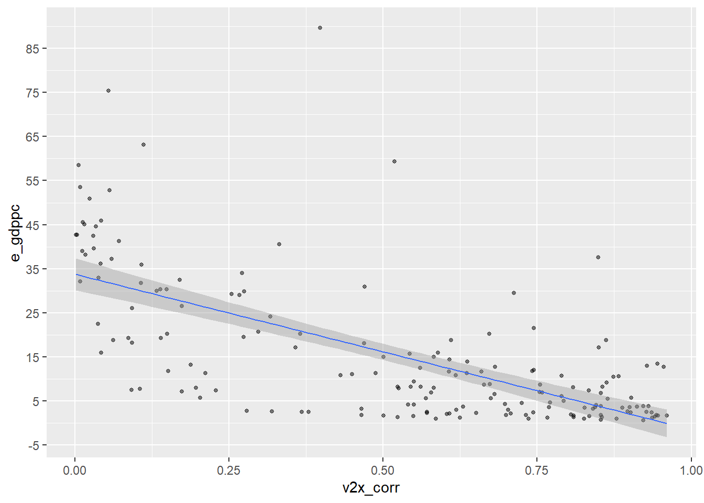
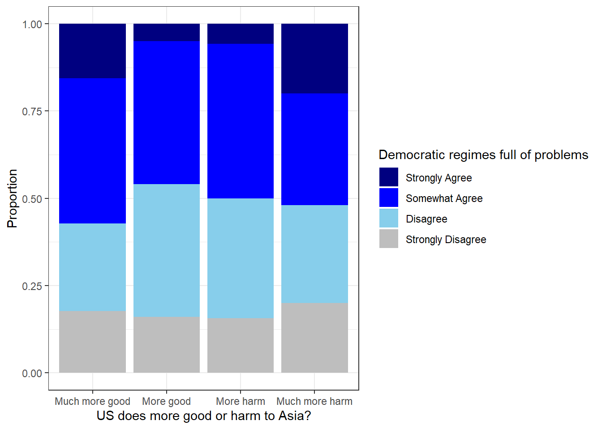

Chapter 8 Communicating results
- Goals for today’s class:
- Regression tables
- Save tables and figures
8.3 VDem
vars <- c("country_name", "country_id", "year",
"v2x_corr","e_gdppc")
df <- read.csv("Project/VDem/VDem_post2000.csv") |>
dplyr::select(all_of(vars)) |>
filter(year==2009) Regression line
ggplot(data=df,aes(x=v2x_corr,y=e_gdppc)) +
geom_point(size=1,alpha=.5) +
geom_smooth(method="lm",size=.5) + # linear model, i.e. linear regression
scale_y_continuous(breaks=c(seq(-5,100,by=10)))
Regression table
Regression output
##
## Call:
## lm(formula = e_gdppc ~ v2x_corr, data = df)
##
## Residuals:
## Min 1Q Median 3Q Max
## -23.003 -6.723 -0.466 4.466 69.824
##
## Coefficients:
## Estimate Std. Error t value Pr(>|t|)
## (Intercept) 33.817 1.828 18.50 <2e-16 ***
## v2x_corr -35.263 3.008 -11.72 <2e-16 ***
## ---
## Signif. codes: 0 '***' 0.001 '**' 0.01 '*' 0.05 '.' 0.1 ' ' 1
##
## Residual standard error: 12.22 on 171 degrees of freedom
## (5 observations deleted due to missingness)
## Multiple R-squared: 0.4456, Adjusted R-squared: 0.4424
## F-statistic: 137.4 on 1 and 171 DF, p-value: < 2.2e-16Table using modelsummary
| (1) | |
|---|---|
| + p < 0.1, * p < 0.05, ** p < 0.01, *** p < 0.001 | |
| (Intercept) | 33.817*** |
| (1.828) | |
| v2x_corr | -35.263*** |
| (3.008) | |
| Num.Obs. | 173 |
| R2 | 0.446 |
| R2 Adj. | 0.442 |
| AIC | 1360.9 |
| BIC | 1370.3 |
| Log.Lik. | -677.441 |
| RMSE | 12.14 |
Goodness-of-fit statistics
## aic bic r.squared adj.r.squared rmse nobs logLik
## 1 1360.881 1370.341 0.4455993 0.4423572 12.14483 173 -677.4406Select relevant statistics
- Keep only “number of observations”, “R-squared”, and “adjusted R-squared” values
modelsummary(m,
stars=TRUE,
gof_map=c("nobs","r.squared","adj.r.squared")) # select relevant goodness-of-fit statistics| (1) | |
|---|---|
| + p < 0.1, * p < 0.05, ** p < 0.01, *** p < 0.001 | |
| (Intercept) | 33.817*** |
| (1.828) | |
| v2x_corr | -35.263*** |
| (3.008) | |
| Num.Obs. | 173 |
| R2 | 0.446 |
| R2 Adj. | 0.442 |
Relabel
modelsummary(list("Base"=m), # list allows me to name the models
stars=TRUE,
gof_map=c("nobs","r.squared","adj.r.squared"),
coef_rename=c("v2x_corr"="Corruption Index")) # rename coefficient| Base | |
|---|---|
| + p < 0.1, * p < 0.05, ** p < 0.01, *** p < 0.001 | |
| (Intercept) | 33.817*** |
| (1.828) | |
| Corruption Index | -35.263*** |
| (3.008) | |
| Num.Obs. | 173 |
| R2 | 0.446 |
| R2 Adj. | 0.442 |
8.4 Canadian Election Study 2021
vars <- c("cps21_age","cps21_news_cons","cps21_govt_confusing") #news consumption and internal political efficacy
ces_select <- read_dta("Project/CES2021/2021 Canadian Election Study v2.0.dta") |>
dplyr::select(all_of(vars))Check transformed variables
##
## 1 2 3 4
## 3371 5905 8464 2651##
## 1 2 3 4 5 6
## 646 3017 4660 5771 4433 1864Regression table
##
## Call:
## lm(formula = cps21_govt_confusing ~ cps21_news_cons, data = ces_dropna)
##
## Residuals:
## Min 1Q Median 3Q Max
## -2.0799 -0.6698 0.1252 0.5352 1.9452
##
## Coefficients:
## Estimate Std. Error t value Pr(>|t|)
## (Intercept) 3.284876 0.019173 171.33 <2e-16 ***
## cps21_news_cons -0.205011 0.004803 -42.68 <2e-16 ***
## ---
## Signif. codes: 0 '***' 0.001 '**' 0.01 '*' 0.05 '.' 0.1 ' ' 1
##
## Residual standard error: 0.8785 on 20389 degrees of freedom
## Multiple R-squared: 0.08203, Adjusted R-squared: 0.08198
## F-statistic: 1822 on 1 and 20389 DF, p-value: < 2.2e-16modelsummary(list("Base"=m),
stars=TRUE,
gof_map=c("nobs","r.squared","adj.r.squared"),
coef_rename=c("cps21_news_cons"="News Consumption")) | Base | |
|---|---|
| + p < 0.1, * p < 0.05, ** p < 0.01, *** p < 0.001 | |
| (Intercept) | 3.285*** |
| (0.019) | |
| News Consumption | -0.205*** |
| (0.005) | |
| Num.Obs. | 20391 |
| R2 | 0.082 |
| R2 Adj. | 0.082 |
Controls
m2 <- lm(data=ces_dropna,cps21_govt_confusing ~ cps21_news_cons + cps21_age) # model 2
modelsummary(list("Base" = m,
"w/ Controls" = m2),
stars=TRUE,
gof_map=c("nobs","r.squared","adj.r.squared"),
coef_rename=c("cps21_news_cons" = "News Consumption",
"cps21_age" = "Age")) | Base | w/ Controls | |
|---|---|---|
| + p < 0.1, * p < 0.05, ** p < 0.01, *** p < 0.001 | ||
| (Intercept) | 3.285*** | 3.313*** |
| (0.019) | (0.023) | |
| News Consumption | -0.205*** | -0.200*** |
| (0.005) | (0.005) | |
| Age | -0.001* | |
| (0.000) | ||
| Num.Obs. | 20391 | 20391 |
| R2 | 0.082 | 0.082 |
| R2 Adj. | 0.082 | 0.082 |
8.5 World Values Survey
vars <- c("B_COUNTRY_ALPHA","Q73","Q236") #confidence in parliament, experts versus government
df <- read_rds("Project/WVS/WVS_Cross-National_Wave_7_rds_v6_0.rds") |>
select(all_of(vars)) |>
filter(B_COUNTRY_ALPHA=="CAN") # choice of country: CanadaRegression table
##
## Call:
## lm(formula = Q236 ~ Q73, data = df_recode)
##
## Residuals:
## Min 1Q Median 3Q Max
## -1.4973 -0.4910 -0.4848 0.5152 1.5214
##
## Coefficients:
## Estimate Std. Error t value Pr(>|t|)
## (Intercept) 2.50351 0.04915 50.937 <2e-16 ***
## Q73 -0.00623 0.01812 -0.344 0.731
## ---
## Signif. codes: 0 '***' 0.001 '**' 0.01 '*' 0.05 '.' 0.1 ' ' 1
##
## Residual standard error: 0.8836 on 4016 degrees of freedom
## Multiple R-squared: 2.944e-05, Adjusted R-squared: -0.0002196
## F-statistic: 0.1183 on 1 and 4016 DF, p-value: 0.7318.6 Asian Barometer
vars <- c("country","Year",
"q175","q169")
df <- read_dta("Project/asianbarometer_wave5/20230504_W5_merge_15.dta") |>
select(all_of(vars)) |>
filter(country==11) # Vietnam (refer to codebook)Regression table
##
## Call:
## lm(formula = q169 ~ q175, data = df_recode)
##
## Residuals:
## Min 1Q Median 3Q Max
## -1.7626 -0.6000 0.2374 0.4000 1.4812
##
## Coefficients:
## Estimate Std. Error t value Pr(>|t|)
## (Intercept) 2.43754 0.08119 30.022 <2e-16 ***
## q175 0.08125 0.04164 1.951 0.0513 .
## ---
## Signif. codes: 0 '***' 0.001 '**' 0.01 '*' 0.05 '.' 0.1 ' ' 1
##
## Residual standard error: 0.86 on 1005 degrees of freedom
## Multiple R-squared: 0.003775, Adjusted R-squared: 0.002783
## F-statistic: 3.808 on 1 and 1005 DF, p-value: 0.05129Saving plots
df_recode |>
ggplot(aes(fill=factor(q169),x=factor(q175))) +
geom_bar(position="fill") +
theme_bw() +
scale_x_discrete(labels=c("Much more good","More good", "More harm", "Much more harm")) +
xlab("US does more good or harm to Asia?") +
ylab("Proportion") +
scale_fill_manual(name="Democratic regimes full of problems", #legend label
values = c("navyblue","blue","skyblue","grey"), #color specification
labels = c("Strongly Agree","Somewhat Agree", "Disagree", "Strongly Disagree"))
Save ggplot as object
obj1 <- df_recode |>
ggplot(aes(fill=factor(q169),x=factor(q175))) +
geom_bar(position="fill") +
theme_bw() +
scale_x_discrete(labels=c("Much more good","More good", "More harm", "Much more harm")) +
xlab("US does more good or harm to Asia?") +
ylab("Proportion") +
scale_fill_manual(name="Democratic regimes full of problems", #legend label
values = c("navyblue","blue","skyblue","grey"), #color specification
labels = c("Strongly Agree","Somewhat Agree", "Disagree", "Strongly Disagree"))